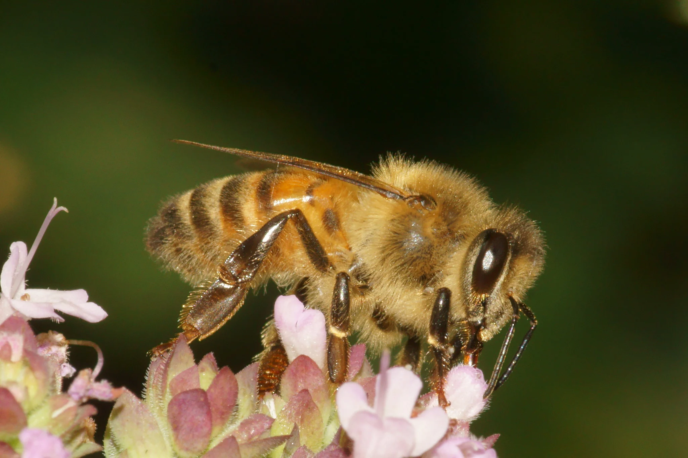

AMENAZAS NATURALES
Los polinizadores enfrentan diversas amenazas naturales que afectan su supervivencia y, por ende, la polinización de plantas, esencial para la biodiversidad y la producción agrícola.
Una de las principales amenazas naturales es el cambio climático. Las alteraciones en los patrones climáticos pueden desincronizar la floración de las plantas y la actividad de los polinizadores, reduciendo la eficiencia de la polinización. Además, las temperaturas extremas y eventos climáticos severos pueden afectar directamente la fisiología y comportamiento de estos organismos.
Otra amenaza significativa es la proliferación de especies invasoras. Estas especies pueden competir con los polinizadores nativos por recursos o introducir enfermedades y parásitos. Por ejemplo, algunas plantas invasoras pueden alterar las redes de polinación al reemplazar a las especies nativas, afectando la disponibilidad de alimento para los polinizadores.
Además, los polinizadores también enfrentan amenazas de depredadores naturales, como aves, reptiles y otros insectos, que pueden reducir sus poblaciones si no existen mecanismos de control adecuados.
AMENAZAS ARTIFICIALES
Las actividades humanas han generado múltiples amenazas artificiales que impactan negativamente a los polinizadores. El uso intensivo de plaguicidas, especialmente neonicotinoides como el imidacloprid, ha demostrado ser letal o subletal para las abejas y otros polinizadores, afectando su capacidad de orientación, reproducción y supervivencia. La agricultura intensiva reduce la diversidad floral y elimina hábitats naturales, lo que disminuye las fuentes de alimento y refugio para los polinizadores. La contaminación del aire, agua y suelo puede afectar la salud de los polinizadores y las plantas que dependen de ellos, alterando las interacciones ecológicas esenciales para la polinización.
PERDIDA DE HABITAD
 La pérdida y fragmentación de hábitats naturales es una de las principales causas del declive de las poblaciones de polinizadores.
La expansión urbana reemplaza ecosistemas naturales por infraestructuras, reduciendo la disponibilidad de recursos florales y sitios de anidación para los polinizadores.
La tala de bosques elimina hábitats esenciales para muchos polinizadores, especialmente aquellos que dependen de árboles específicos para anidar o alimentarse.
Los sistemas agrícolas basados en monocultivos reducen la diversidad de plantas, limitando las fuentes de néctar y polen disponibles para los polinizadores.
La pérdida y fragmentación de hábitats naturales es una de las principales causas del declive de las poblaciones de polinizadores.
La expansión urbana reemplaza ecosistemas naturales por infraestructuras, reduciendo la disponibilidad de recursos florales y sitios de anidación para los polinizadores.
La tala de bosques elimina hábitats esenciales para muchos polinizadores, especialmente aquellos que dependen de árboles específicos para anidar o alimentarse.
Los sistemas agrícolas basados en monocultivos reducen la diversidad de plantas, limitando las fuentes de néctar y polen disponibles para los polinizadores.
PARÁSITOS Y ENFERMEDADES
Los polinizadores son susceptibles a diversas enfermedades y parásitos que pueden diezmar sus poblaciones.
Varroa destructor
Ácaro que debilita a las abejas y transmite virus.
Nosema spp
Protozoos que afectan el tracto digestivo de las abejas.
Tropilaelaps spp
Ácaros que parasitan abejas, similares al Varroa.
Estrategias de Conservación de los Polinizadores
Conservar y restaurar hábitats naturales es esencial para asegurar la supervivencia de los polinizadores. Esto incluye la creación de corredores ecológicos, jardines polinizadores y la reforestación con especies nativas que provean néctar y polen durante todo el año.
Fomentar prácticas agrícolas sostenibles, como la agricultura ecológica, rotación de cultivos y el uso de plaguicidas naturales o menos tóxicos, puede reducir el impacto negativo sobre los polinizadores.
Es fundamental fortalecer los sistemas de vigilancia para detectar tempranamente la presencia de enfermedades o parásitos, así como fomentar la capacitación de apicultores en medidas de bioseguridad y control sanitario.
Las campañas educativas dirigidas al público general, agricultores y responsables políticos son clave para aumentar la conciencia sobre el papel de los polinizadores y la necesidad de protegerlos.
Promover una apicultura responsable, con prácticas que respeten la salud de las colonias y el entorno natural, contribuye al mantenimiento de polinizadores manejados y silvestres.
La implementación de leyes y políticas de conservación específicas, como la creación de zonas libres de pesticidas, subsidios a prácticas sostenibles y programas de incentivo a la biodiversidad, puede tener un impacto directo en la conservación de los polinizadores.
Fomentar la investigación sobre ecología de polinizadores, cambio climático, genética, interacciones planta-animal, y nuevas tecnologías para el monitoreo permite desarrollar soluciones adaptadas y efectivas.